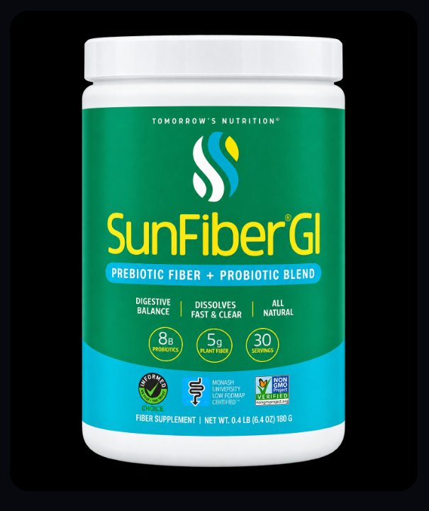

Choosing a daily fiber supplement

Most adults don't get enough fiber. Dietary guidelines suggest roughly 25 grams a day for women and 38 grams for men, and many people get about half of that. A fiber supplement can help close the gap, but the three most popular powders work very differently. Here's how to choose.
SunFiber GI is the fiber in Godwin's own routine. He started taking it about six months ago and takes it every day with breakfast. What he likes about it: it dissolves easily, and it combines prebiotic fiber and a probiotic in one product, so there's one scoop instead of two products.
Since adding it, Godwin says his gut health is better and he feels more alert during the day. Fiber was one part of a wider daily routine for him, so we can't credit one product alone, but it's the fiber he has stuck with.
Godwin's personal experience. Results vary from person to person.
SunFiber (partially hydrolyzed guar gum) comes from the guar bean. It dissolves clear and doesn't thicken, and it ferments slowly in the gut. That's why it's often chosen by people with sensitive stomachs who get gassy or bloated from other fibers.
Benefiber (wheat dextrin) is also clear and taste-free, so it disappears into coffee, water or soup. It has less fiber per serving, so you need more spoonfuls to get the same amount.
Metamucil (psyllium husk) forms a gel. That's what makes it effective for regularity, and psyllium is the most studied of the three, including for cholesterol support. The trade-off is texture: it thickens fast, so you mix and drink right away.
| Feature | SunFiber GI | Benefiber | Metamucil Sugar-Free |
|---|---|---|---|
| Fiber type | Sunfiber (partially hydrolyzed guar gum), a soluble prebiotic fiber from the guar bean | Wheat dextrin, a soluble prebiotic fiber | Psyllium husk, a gel-forming soluble fiber |
| Fiber per serving | 5 g soluble fiber per scoop | About 3 g per 2 teaspoons. The label suggests 4 teaspoons a day. | About 3 g per rounded teaspoon |
| Probiotics | Yes: 8 billion CFU Bifidobacterium lactis | None. It's a prebiotic fiber that feeds the good bacteria you already have. | None |
| Texture & mixing | Dissolves clear with no grit, and does not thicken. Mix into hot or cold drinks or soft foods. | Dissolves clear and completely in non-carbonated drinks and soft foods | Thickens as it sits. Stir into at least 8 oz of liquid and drink right away. |
| Taste | Unflavored, essentially tasteless | Unflavored, taste-free | Orange flavored (sugar-free version sweetened with aspartame) |
| Sugar & gluten | Sugar-free, gluten-free, vegan, low-FODMAP certified | Sugar-free, gluten-free | Sugar-free, gluten-free |
| Size shown | 30 servings (30-day supply) | 250 teaspoons | 180 teaspoons |
| Gentle on the stomach? | Ferments slowly, so it's designed to cause less gas and bloating. A good fit for sensitive stomachs. | Usually well tolerated. Start low and increase gradually. | Can cause gas at first. Increase slowly and drink plenty of water. |
| Stands out for | Fiber and a probiotic in one scoop, plus low-FODMAP certification | An invisible fiber you can add to coffee, water, or food without changing the taste | Psyllium is the most-studied of the three. Metamucil also makes cholesterol and blood-sugar support claims. |
| Best for | Sensitive stomachs and anyone who wants one simple daily product | People who want fiber they won't notice in drinks or food | Regularity plus heart-health support, for people who don't mind a thicker drink |
| Shop | See SunFiber GI | See Benefiber | See Metamucil |
This article shares general information and personal experience, not medical advice. Talk with your doctor or pharmacist before starting a supplement, especially if you take medication, are pregnant, or have a health condition.
They do different jobs. SunFiber GI dissolves clear, is low-FODMAP certified and includes a probiotic, which suits sensitive stomachs. Metamucil (psyllium) forms a gel, is the most studied for regularity and cholesterol, but thickens and can cause gas at first.
Yes. SunFiber dissolves in hot or cold drinks and soft foods and does not thicken, according to the product label.
General guidelines suggest about 25 grams a day for adult women and 38 grams for adult men. Food sources like beans, vegetables, fruit and whole grains should come first; a supplement can help fill the gap.